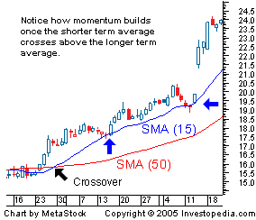

A simple, or arithmetic, moving average that is calculated by adding the closing price of the security for a number of time periods and then dividing this total by the number of time periods. Short-term averages respond quickly to changes in the price of the underlying, while long-term averages are slow to react.
 In other words, this is the average stock price over a certain period of time. Keep in mind that equal weighting is given to each daily price. As shown in the chart above, many traders watch for short-term averages to cross above longer-term averages to signal the beginning of an uptrend. As shown by the blue arrows, short-term averages (e.g. 15-period SMA) act as levels of support when the price experiences a pullback. Support levels become stronger and more significant as the number of time periods used in the calculations increases.
Generally, when you hear the term "moving average", it is in reference to a simple moving average. This can be important, especially when comparing to an exponential moving average (EMA).
{kind=link}